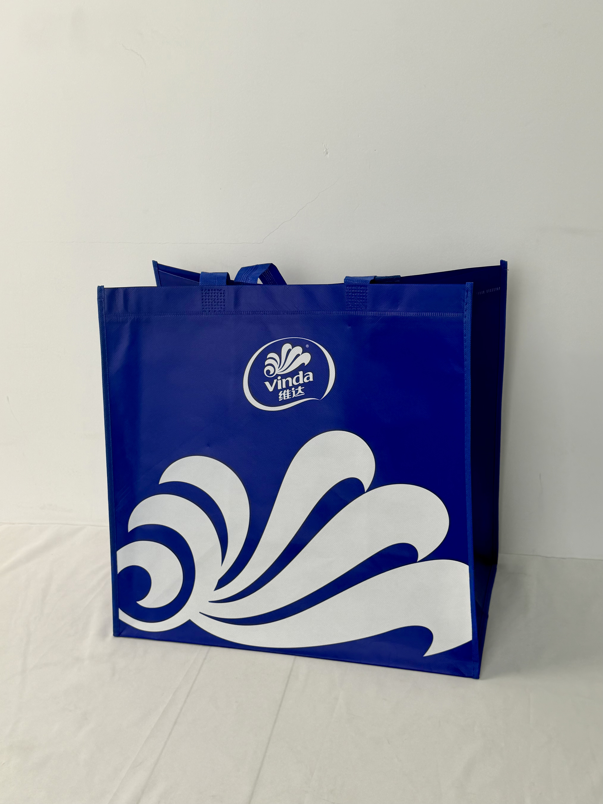

A bold blue promotional tote for Vinda tissue products, featuring an oversized white wave graphic that transforms the brand's iconic logo into a dynamic visual statement at supermarket scale.

Vinda is one of Asia's largest tissue and personal care manufacturers, with a brand presence spanning China, Southeast Asia, and beyond. The company's iconic blue-and-white color scheme and wave-shaped logo are among the most recognized visual identities in the household-products category. In China, Vinda competes in a crowded market where brand loyalty is built through consistent quality, emotional advertising, and strategic promotional partnerships with major retailers.
Our blue is our most valuable asset. When customers see that blue in the supermarket, they don't need to read the label — they already know it's Vinda.
The promotional tote was developed for Vinda's annual supermarket partnership program, distributed as a gift-with-purchase during bulk-buy promotions. The design brief emphasized maximum brand visibility at the point of purchase — the bag needed to function as a walking advertisement when carried through crowded retail environments.
The design strategy maximizes the brand's existing visual equity by scaling the wave motif to an unprecedented size. Rather than a small logo in the corner, the wave dominates the entire lower half of the bag — creating a graphic impact that reads instantly from across a supermarket aisle. The deep corporate blue field ensures that even when the bag is partially obscured, the color alone signals Vinda.
Brand wave scaled to dominate the composition for maximum visual impact at distance.
Vinda's corporate blue serves as instant brand recognition even before the wave or logo is processed.
Maximum color contrast ensures visibility in fluorescent-lit retail environments and outdoor settings.
Wide gusset and reinforced handles designed for bulk tissue multi-pack shopping loads.
FMCG promotional bags must balance visual impact with cost efficiency at massive production volumes. The Vinda specification prioritizes color accuracy, print consistency, and structural durability for repeated reuse — extending brand exposure far beyond the initial purchase.
| Parameter | Specification | Test Standard |
|---|---|---|
| Load Capacity | 8 kg | ASTM D5265 |
| Color Accuracy | Delta E < 1.5 vs. brand guide | ISO 12647 |
| Color Fastness | Grade 4-5 | ISO 105-B02 |
| Seam Strength | > 25 N/cm | ASTM D1683 |
The production workflow prioritizes color consistency across massive batch volumes. Vinda's corporate blue is its most valuable brand asset, and any deviation would undermine recognition value.
90gsm non-woven PP with Vinda corporate-blue masterbatch. Color verified every 2,000 meters against archived brand standard.
White plastisol for wave graphic and logo. 100 mesh screen for large-area coverage with uniform opacity on dark blue.
15-micron gloss BOPP enhancing white-on-blue contrast and providing surface protection for repeated reuse.
Ultrasonic die-cutting with 14cm box gusset. Blue handles attached with reinforced cross-stitch. Color sampling every 1,000 units.
The promotional tote was distributed as a gift-with-purchase across Vinda's bulk-buy promotions at Carrefour, RT-Mart, and JD Supermarket channels. The campaign targeted household purchasers who buy tissue products in large multi-packs and respond to practical reusable gifts.
Key Insight: Supermarket employees reported that the Vinda blue bags were the most commonly seen reusable tote in their stores — customers would bring them back for subsequent shopping trips, creating a virtuous cycle of repeated brand exposure. One store manager estimated seeing the bags used 3-4 times per week by regular customers.
The oversized wave graphic proved particularly effective for visibility. Unlike smaller logos that disappear at distance, the wave occupies enough visual territory that the brand is identifiable even when the bag is partially obscured by other items or viewed from across a parking lot.
Three design decisions differentiate this FMCG promotional bag from standard supermarket giveaways. Each maximizes brand visibility and reuse motivation.
Vinda's corporate blue is so distinctive that the bag achieves brand recognition before any graphic or text is processed. This color-first recognition is the holy grail of FMCG branding — when consumers identify your product by color alone, you've won the battle for shelf attention and shopping-cart recall.
The wave shape carries subconscious associations with water, cleanliness, and freshness — all core attributes for tissue products. By scaling the wave to fill half the bag, Vinda turns its logo into an environmental signal that reinforces product category benefits without requiring explicit messaging.
Many promotional bags are too small for practical reuse. Vinda's 38cm-wide format accommodates real shopping loads — groceries, household items, even clothing purchases. When a promotional bag is genuinely useful, it transitions from disposable packaging to permanent shopping equipment, generating brand impressions for months or years.
We design and manufacture promotional totes that maximize brand visibility and reuse rates. From color-critical production to large-format graphics, we turn giveaways into walking billboards.